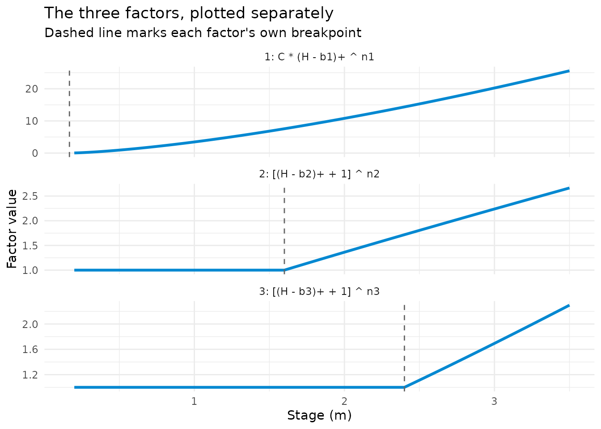
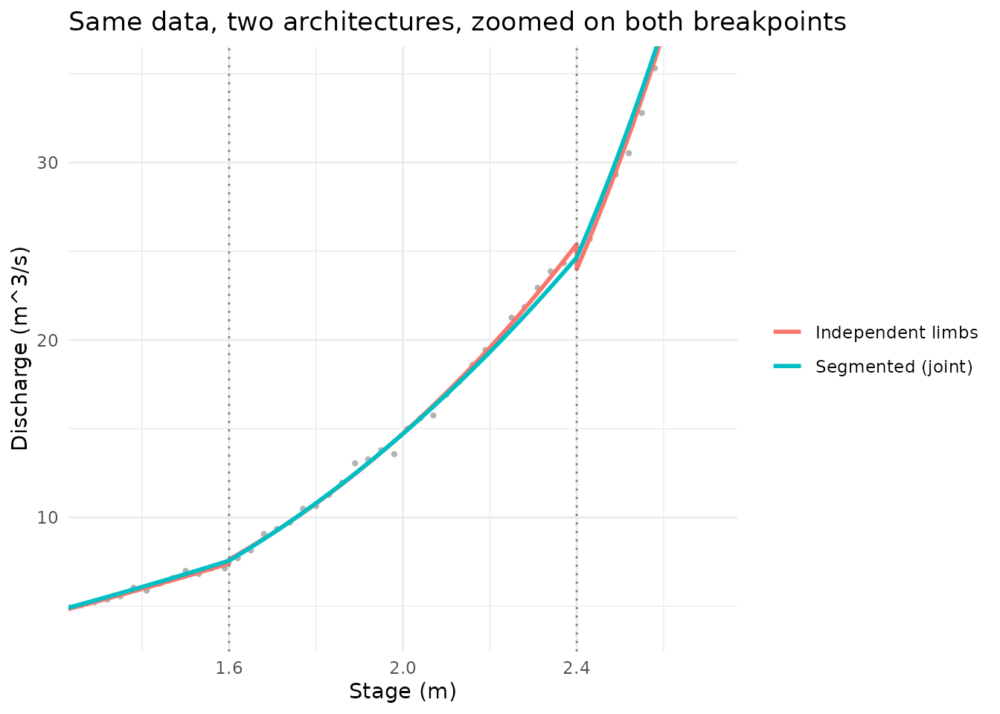

How the Segmented Model Actually Composes
Jonathan Payne, Environment Agency Flood Forecasting
September 2026
Source:vignettes/segmented_model_guide.Rmd
segmented_model_guide.Rmdvignette("rating_curves_guide")’s section on
rate_optimise_segmented() gives the formula and states, in
prose, that there’s no junction gap to reconcile because the model can’t
produce one. It doesn’t show what that actually looks like. This
vignette is the diagram.
The formula, read as a product of switches
Hodson et al. (2024)’s segmented model writes discharge as one product across all segments, not a curve chosen per stage band:
where
means
and
are the breakpoints. Read each factor for
as a switch: at and below its own breakpoint
,
,
so that whole factor equals
– multiplying by 1 changes nothing, so a segment below its own
breakpoint is completely inert, not just small. Above
,
the factor climbs above 1 and starts contributing. The first factor is
different only in not having the + 1: it can be exactly 0,
which is what makes it the one that reaches zero flow.
Watching the switches turn on
Refit the walkthrough example from
rating_curves_guide.Rmd’s own segmented section and pull
the three factors back apart:
set.seed(7)
stage_seg_m <- seq(0.3, 3.5, by = 0.03)
q1 <- 4 * pmax(stage_seg_m - 0.1, 0)^1.55
q2 <- (pmax(stage_seg_m - 1.6, 0) + 1)^0.9
q3 <- (pmax(stage_seg_m - 2.4, 0) + 1)^1.1
discharge_seg_cms <- q1 * q2 * q3 * exp(rnorm(length(stage_seg_m), sd = 0.03))
fit_seg <- rate_optimise_segmented(discharge_seg_cms, stage_seg_m, control = c(1.6, 2.4))
co <- fit_seg@coefficients
stage_seq <- seq(0.2, 3.5, by = 0.01)
factors_dt <- rbind(
data.table(stage_m = stage_seq, factor = "1: C * (H - b1)+ ^ n1", value = co$C * pmax(stage_seq - co$bp1, 0)^co$n1),
data.table(stage_m = stage_seq, factor = "2: [(H - b2)+ + 1] ^ n2", value = (pmax(stage_seq - co$bp2, 0) + 1)^co$n2),
data.table(stage_m = stage_seq, factor = "3: [(H - b3)+ + 1] ^ n3", value = (pmax(stage_seq - co$bp3, 0) + 1)^co$n3)
)
ggplot(factors_dt, aes(stage_m, value)) +
geom_line(colour = "#0288d1", linewidth = 1.1) +
geom_vline(data = data.table(factor = unique(factors_dt$factor), bp = c(co$bp1, co$bp2, co$bp3)),
aes(xintercept = bp), linetype = "dashed", colour = "grey40") +
facet_wrap(~factor, scales = "free_y", ncol = 1) +
labs(
title = "The three factors, plotted separately",
subtitle = "Dashed line marks each factor's own breakpoint",
x = "Stage (m)", y = "Factor value"
) +
theme_minimal(base_size = 11)
Factors 2 and 3 are exactly flat at 1 up to their own dashed
breakpoint line, then start climbing – precisely the “inert until
switched on” behaviour the formula states, made visible. Factor 1 is the
only one that reaches 0, at its own breakpoint (b1, close
to the true zero-flow stage). Multiply all three together at any stage
and you get the fitted discharge; below b2, that product is
just factor 1 alone (the other two are inert at 1), so the curve
genuinely behaves like a single one-segment rating down there – the
transition at b2 isn’t a join between two different models,
it’s the moment a second factor stops being inert.
Why there’s no junction gap to reconcile
Fit the same data two ways – once as independent limbs
(rate_optimise(),
vignette("rating_curves_guide")’s usual junction-gap- prone
approach), once as the segmented joint model – and overlay both:
fit_independent <- rate_optimise(discharge_seg_cms, stage_seg_m, control = c(1.6, 2.4))
curve_independent <- rbindlist(lapply(seq_len(nrow(fit_independent@limbs)), function(i) {
L <- fit_independent@limbs[i]
h <- seq(L$lower_stage_m, L$upper_stage_m, length.out = 100)
data.table(stage_m = h, discharge_cms = L$C * (h - L$a)^L$n)
}))
curve_segmented <- data.table(
stage_m = stage_seq,
discharge_cms = co$C * pmax(stage_seq - co$bp1, 0)^co$n1 *
(pmax(stage_seq - co$bp2, 0) + 1)^co$n2 * (pmax(stage_seq - co$bp3, 0) + 1)^co$n3
)
ggplot() +
geom_point(data = data.table(stage_m = stage_seg_m, discharge_cms = discharge_seg_cms),
aes(stage_m, discharge_cms), colour = "grey70", size = 0.8) +
geom_line(data = curve_independent, aes(stage_m, discharge_cms, colour = "Independent limbs"), linewidth = 1) +
geom_line(data = curve_segmented, aes(stage_m, discharge_cms, colour = "Segmented (joint)"), linewidth = 1) +
geom_vline(xintercept = c(1.6, 2.4), linetype = "dotted", colour = "grey50") +
coord_cartesian(xlim = c(1.3, 2.7), ylim = c(4, 35)) +
labs(
title = "Same data, two architectures, zoomed on both breakpoints",
x = "Stage (m)", y = "Discharge (m^3/s)", colour = NULL
) +
theme_minimal(base_size = 11)
Zoomed on the two breakpoints, the independent-limb curve visibly
steps at each dotted line – each limb was fitted with no knowledge the
other existed, so nothing forced them to agree at the junction
(vignette("rating_curves_guide")’s “The junction gap
problem” section covers this in general, and the tools for closing it
after the fact). The segmented curve passes through both breakpoints
without a kink, because it was never two curves to begin with –
continuity was never at risk of being violated, since there was only
ever one product to evaluate.
The trade-off this buys
Nothing here is free. The segmented model’s factors for
are parameterised relative to every earlier breakpoint at once
(each factor multiplies onto everything below it), so its loss surface
is genuinely non-convex in a way independent per-limb fitting isn’t –
exactly why rate_optimise_segmented() defaults to
multi_start = TRUE and holds interior breakpoints fixed
unless you explicitly ask for estimate_breakpoints = TRUE.
The guaranteed continuity comes from giving up the independence that
made each limb’s own fit a comparatively easy, well-behaved
three-parameter problem.
References
Hodson, T.O., et al. (2024). Rating curve estimation under model and parameter uncertainty. Water Resources Research (segmented power-law formulation this function implements).
Where to go next
-
vignette("rating_curves_guide")– “A different architecture:rate_optimise_segmented()” for the full API and what it deliberately doesn’t reproduce from Hodson et al.’s own Bayesian treatment; “The junction gap problem” for the independent-limb side of this comparison in full. -
?rate_optimise_segmented– full argument reference.